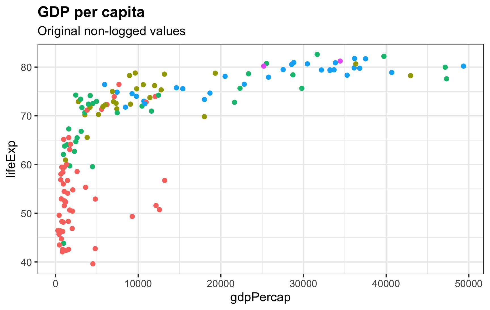
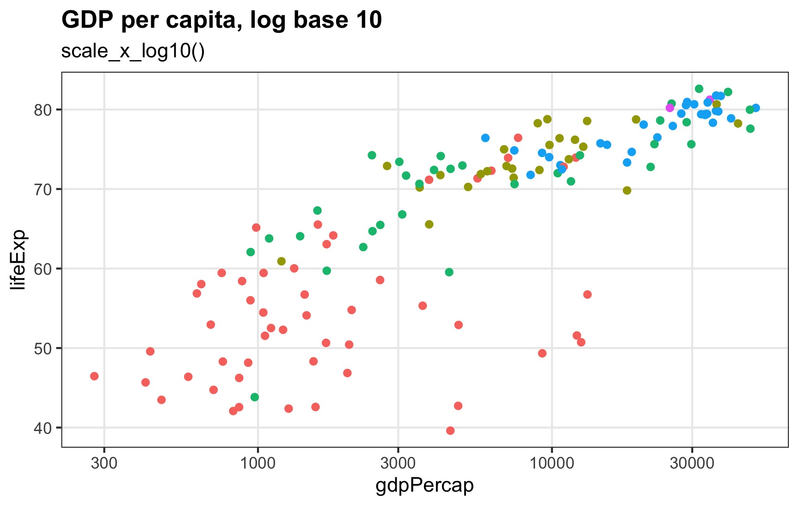
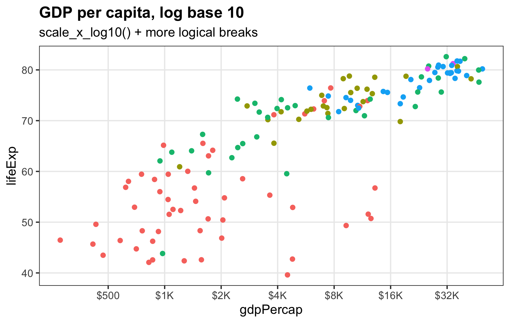
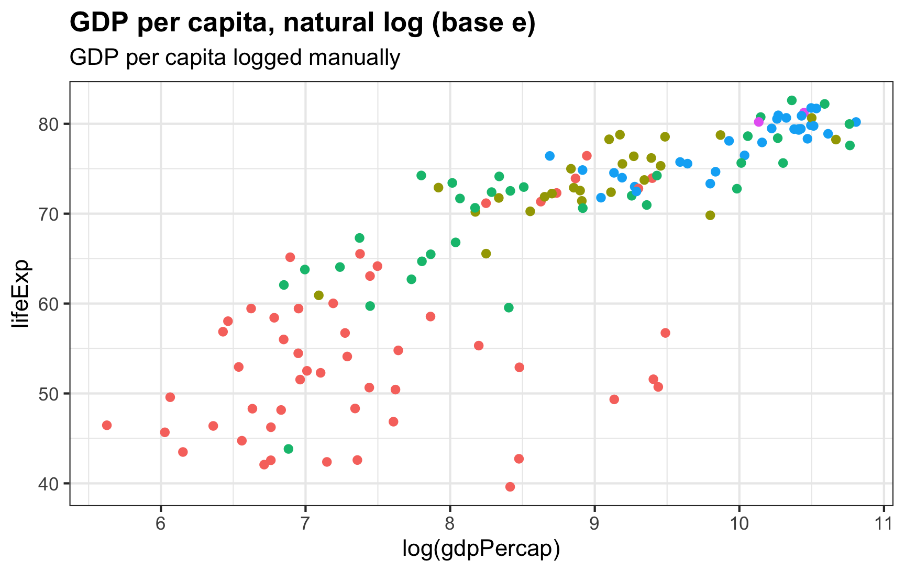
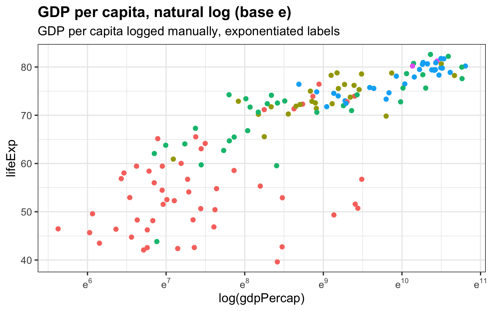
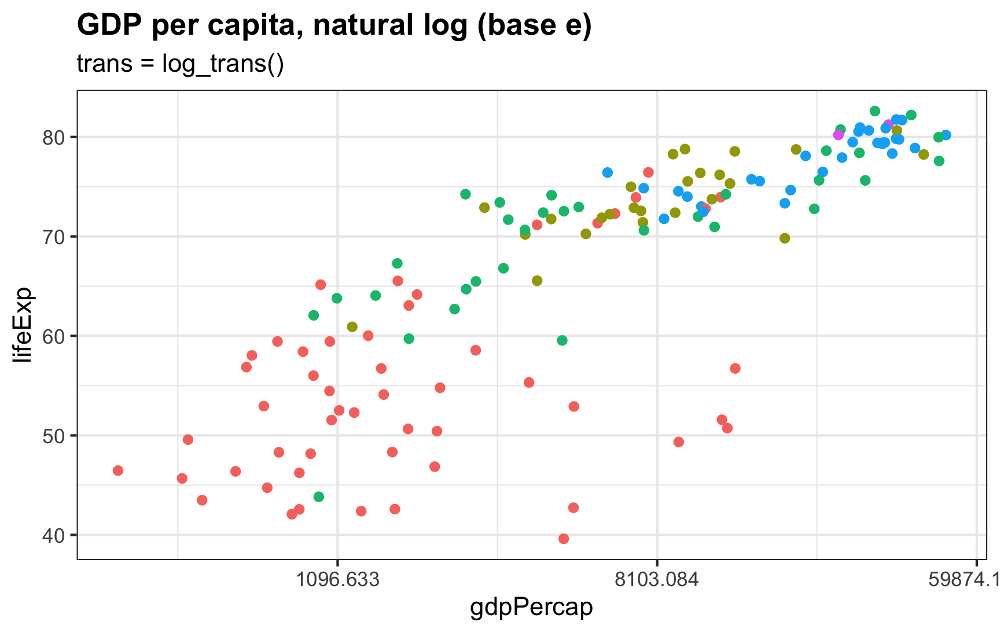
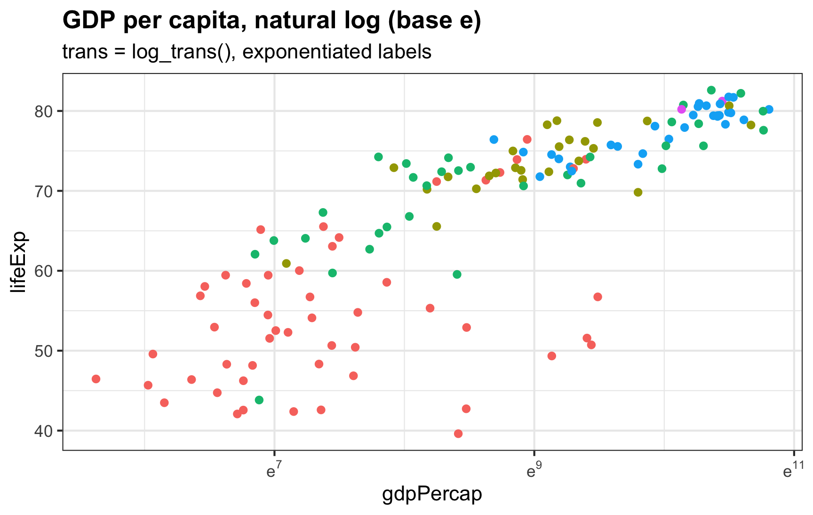

![]()
I always forget how to deal with logged values in ggplot—particularly things that use the natural log. The {scales} package was invented in part to allow users to adjust axes and scales in plots, including adjusting axes to account for logged values, but there have been some new developments in {scales} that have made existing answers (like this one on StackOverflow) somewhat obsolete (e.g. the trans_breaks() and trans_format() functions used there are superceded and deprecated).
So here’s a quick overview of how to use 2022-era {scales} to adjust axis breaks and labels to use both base 10 logs and natural logs. I’ll use data from the Gapminder project, since it has a nice exponentially-distributed measure of GDP per capita.
Original unlogged values
The distribution of GDP per capita is heavily skewed, with most countries reporting less than $10,000. As a result, the scatterplot makes an upside-down L shape. Try sticking a regression line on that and you’ll get in trouble.
ggplot(gapminder_2007, aes(x = gdpPercap, y = lifeExp, color = continent)) +
geom_point() +
guides(color = "none") +
labs(title = "GDP per capita",
subtitle = "Original non-logged values")
Log base 10
ggplot comes with a built-in scale_x_log10() to transform the x-axis into logged values. It will automatically create pretty, logical breaks based on the data. Here, the breaks automatically go from 300 → 1000 → 3000 → 10000, and so on:
ggplot(gapminder_2007, aes(x = gdpPercap, y = lifeExp, color = continent)) +
geom_point() +
scale_x_log10() +
guides(color = "none") +
labs(title = "GDP per capita, log base 10",
subtitle = "scale_x_log10()") +
theme(panel.grid.minor = element_blank())
If we want to be mathy about the labels, we can format them as base 10 exponents using label_log():
ggplot(gapminder_2007, aes(x = gdpPercap, y = lifeExp, color = continent)) +
geom_point() +
scale_x_log10(labels = label_log(digits = 2)) +
guides(color = "none") +
labs(title = "GDP per capita, log base 10",
subtitle = "scale_x_log10() with exponentiated labels") +
theme(panel.grid.minor = element_blank())What if we don’t want the default 300, 1000, 3000, etc. breaks? In the interactive plot at gapminder.org, the breaks start at 500 and double after that: 500, 1000, 2000, 4000, 8000, etc. We can control our axis breaks by feeding a list of numbers to scale_x_log10() with the breaks argument. Instead of typing out every possible break, we can generate a list of numbers starting at 500 and then doubling (\(500 \times 2^0\), \(500 \times 2^1\), \(500 \times 2^2\), and so on):
500 * 2^seq(0, 8, by = 1)
## [1] 500 1000 2000 4000 8000 16000 32000 64000 128000For bonus fun, we’ll format the breaks as dollars and use the new-as-of-{scales}-1.2.0 cut_short_scale() to shorten the values:
ggplot(gapminder_2007, aes(x = gdpPercap, y = lifeExp, color = continent)) +
geom_point() +
scale_x_log10(breaks = 500 * 2^seq(0, 9, by = 1),
labels = label_dollar(scale_cut = cut_short_scale())) +
guides(color = "none") +
labs(title = "GDP per capita, log base 10",
subtitle = "scale_x_log10() + more logical breaks") +
theme(panel.grid.minor = element_blank())
Log base \(e\), or the natural log
Log base 10 makes sense for visualizing things. Seeing the jumps from $500 → $1000 → $2000 is generally easy for people to understand (especially in today’s world of exponentially growing COVID cases). When working with logged values for statistical modeling, analysts prefer to use the natural log, or log base \(e\) instead.
Here are a bunch of helpful resources explaining what \(e\) and the natural log are and why analysts use them all the time:
The default logging function in R, log(), calculates the natural log (you have to use log10() or log(base = 10) to get base 10 logs).
Plotting natural logged values is a little trickier than base 10 values, since ggplot doesn’t have anything like scale_x_log_e(). But it’s still doable.
First, we can log the value on our own and just use the default scale_x_continuous() for labeling:
ggplot(gapminder_2007, aes(x = log(gdpPercap), y = lifeExp, color = continent)) +
geom_point() +
guides(color = "none") +
labs(title = "GDP per capita, natural log (base e)",
subtitle = "GDP per capita logged manually")
Those 6, 7, 8, etc. breaks in the x-axis represent the power \(e\) is raised to, like \(e^6\) and \(e^8\). We can format these labels as exponents to make that clearer:
ggplot(gapminder_2007, aes(x = log(gdpPercap), y = lifeExp, color = continent)) +
geom_point() +
scale_x_continuous(labels = label_math(e^.x)) +
guides(color = "none") +
labs(title = "GDP per capita, natural log (base e)",
subtitle = "GDP per capita logged manually, exponentiated labels")
To get these labels, we have to pre-log GDP per capita. We didn’t need to pre-log the varialb when using scale_x_log10(), since that logs things for us. We can have the scale_x_*() function handle the natural logging for us too by specifying trans = log_trans():
ggplot(gapminder_2007, aes(x = gdpPercap, y = lifeExp, color = continent)) +
geom_point() +
scale_x_continuous(trans = log_trans()) +
guides(color = "none") +
labs(title = "GDP per capita, natural log (base e)",
subtitle = "trans = log_trans()")
Everything is logged as expected, but those labels are gross—they’re \(e^7\), \(e^9\), and \(e^{11}\), but on the dollar scale:
We can format these breaks as \(e\)-based exponents instead with label_math() (with the format = log argument to make the formatting function log the values first):
ggplot(gapminder_2007, aes(x = gdpPercap, y = lifeExp, color = continent)) +
geom_point() +
scale_x_continuous(trans = log_trans(),
# This breaks_log() thing happens behind the scenes and
# isn't strictly necessary here
# breaks = breaks_log(base = exp(1)),
labels = label_math(e^.x, format = log)) +
guides(color = "none") +
labs(title = "GDP per capita, natural log (base e)",
subtitle = "trans = log_trans(), exponentiated labels")
trans = log_trans().If we want more breaks than 7, 9, 11, we can feed the scaling function a list of exponentiated breaks:
ggplot(gapminder_2007, aes(x = gdpPercap, y = lifeExp, color = continent)) +
geom_point() +
scale_x_continuous(trans = log_trans(),
breaks = exp(6:11),
labels = label_math(e^.x, format = log)) +
guides(color = "none") +
labs(title = "GDP per capita, natural log (base e)",
subtitle = "trans = log_trans(), exponentiated labels, custom breaks")
trans = log_trans().Citation
@online{heiss2022,
author = {Heiss, Andrew},
title = {How to Use Natural and Base 10 Log Scales in Ggplot2},
date = {2022-12-08},
url = {https://www.andrewheiss.com/blog/2022/12/08/log10-natural-log-scales-ggplot/},
doi = {10.59350/b4gjd-50c81},
langid = {en}
}